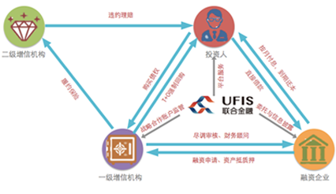

【微贷保】产品
“微贷保”是与联合金融建立战略合作关系的实力小贷机构提供通过审查的借款客户，在联合金融平台上申请借款。投资人将资金出借给有稳定现金流、信用良好的实体经营企业，获得10%-15%年化收益，借款本息债权由小额贷款公司提供第三方强制回购担保，且借款企业必须提供足值抵押物作为反担保安全措施。投资当日开始计息，按月付息，到期还本。 |
 |
【微贷保】简介
“微贷保”产品是联合金融网站平台针对经营业绩好、还款能力强高成长性企业提供的投融资中介服务。联合金融平台向投资人和借款人提供多对一的阳光借贷服务，帮助双方快捷方便地完成投资和借贷匹配，双方通过与平台的委托投（融）资服务电子协议，明确双方的债务与债权关系。所有“微贷保”贷款产品均由信誉好实力强的小额贷款公司承担第三方强制回购担保责任，若借款方未能履行还款责任，小贷公司将对未被偿还的剩余本金和截止到代偿日的全部应还未还利息与罚息进行全额偿付。如果小贷公司未能及时偿付，则自动启动小贷公司保证金赔付机制。
【微贷保】交易模式
|
增信小贷机构资质要求： a.)成立时间满24个月以上，经营情况良好，无重大违法违规行为，无重大风险事项； b.)在当地金融办的年度考核评级中连续2年保持在A（含）以上； c.)连续两个审计年度逾期率不超过2%； d.)担保融资总额不超过小贷公注册资本的50%； e.)单笔担保融资额度不超过500万元； |
 |
【微贷保】产品优势
期限灵活：根据企业的实际融资期限，一般短期项目较多，可以满足用户短期投资的需要； 真实透明：融资企业信息真实且披露透明，投资人可全程跟踪融资企业信息，放心投资； 多重保障：产品采用保证金+实力小贷公司强制回购担保+大股东担保+资产抵押等多种形式的增信措施，多重还款来源，有足够的安全保障。 |